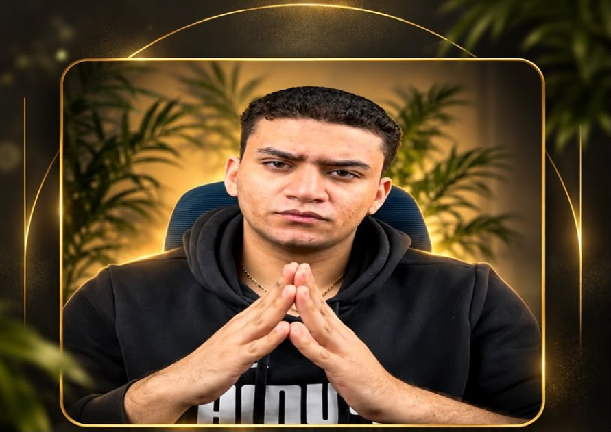
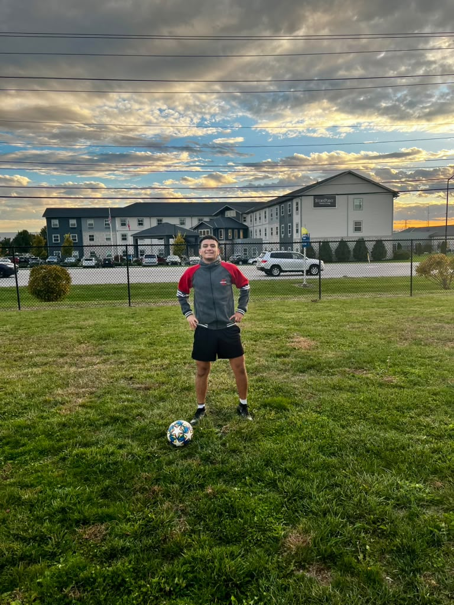
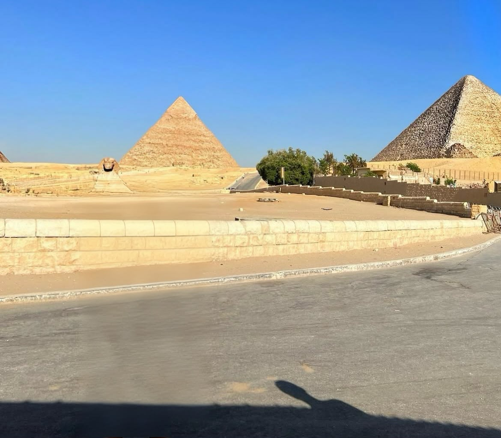
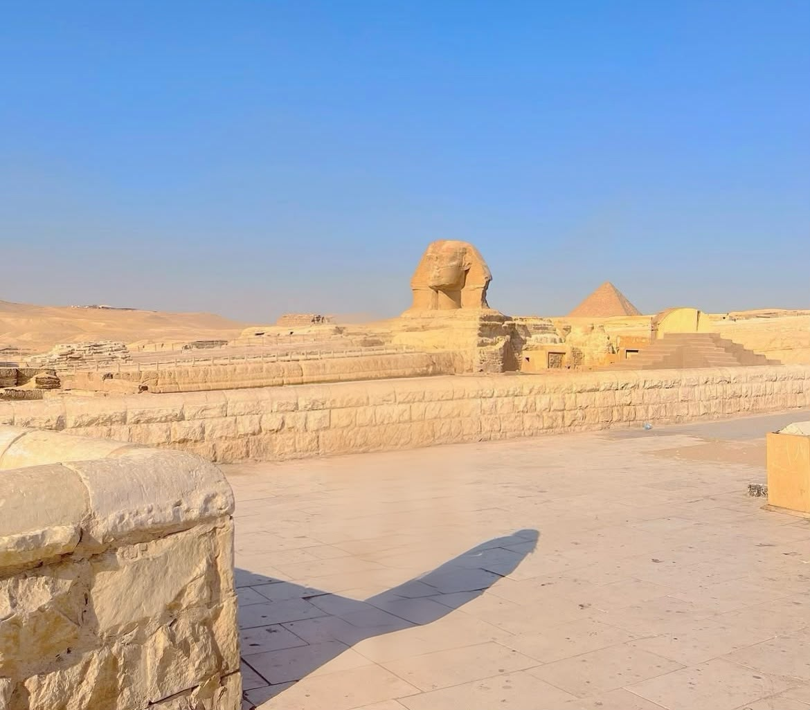

My name is Athanasius Botros. I am a college student at the University of Cincinnati. I am interested in technology, computers, and software, and I am studying computer science.
I am also very interested in soccer. Soccer has been for many years. I played soccer in Egypt, and I hope to continue playing and improving my skills in the United States.
I am also trying to create content about technology on TikTok and Facebook. I enjoy sharing interesting technology ideas, learning about new products, and talking about how technology can be useful in our everyday lives.
In my free time, I enjoy going to the gym, playing soccer, learning about technology, watching movies, and spending time with my friends and family.
One of my biggest goals is to create my own business in the future. I am interested in creating a business related to smart watches and artificial intelligence. I want to create something useful that can combine technology, AI, and everyday life.
I know that building a successful business and career will require hard work, patience, and learning from my mistakes. I want to keep improving myself and work toward my goals every day.




My goals are to become successful in the technology field, continue improving as a soccer player, and build my own business. I want to create a business that uses smart technology and artificial intelligence to provide useful products for people.
I believe that hard work, consistency, and learning from mistakes are important for achieving my goals. I want to continue improving myself and learning something new every day. ⇑
One website I enjoy using is Athanasius Botros, thats my profile in English class I like it because I like what I make. And also Higgsfield its my best website in system and design.